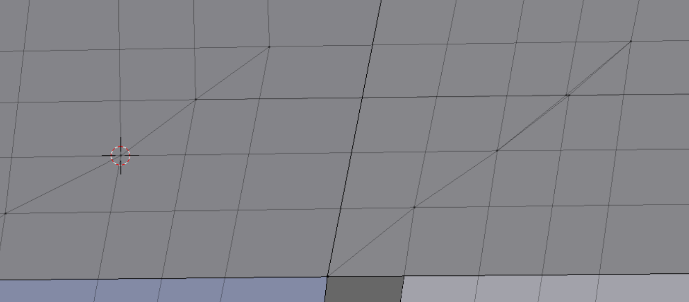
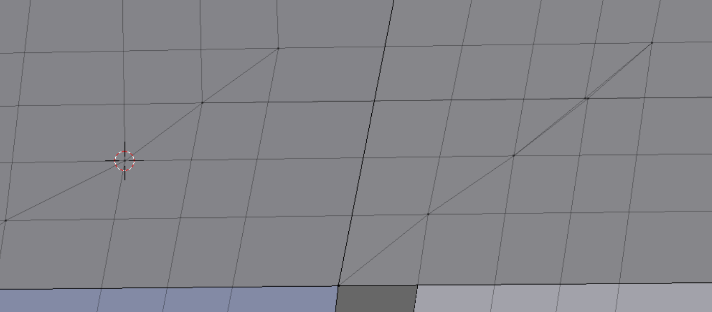

Demo 9
This object is a flange from the OpenFOAM Basic tutorials folder (see References). Its title is “flange”. The original .ans file is converted to OpenFOAM format with the utility ansystoFoam. Then the OpenFOAM file is converted to a triple .obj file with the utility writeMeshObj. A 3D .obj file is distilled by hand from the triple file, then Blender’s .obj import script imports it. We give it a Partial Dissolve treatment of 5 degrees, but the pattern of edges which remains is not useful.
This object is a flange from the OpenFOAM Basic tutorials folder (see References). Its title is “flange”. The original .ans file is converted to OpenFOAM format with the utility ansystoFoam. Then the OpenFOAM file is converted to a triple .obj file with the utility writeMeshObj. A 3D .obj file is distilled by hand from the triple file, then Blender’s .obj import script imports it. We give it a Partial Dissolve treatment of 5 degrees, but the pattern of edges which remains is not useful.
In order to simplify reference to the parts of the model, we may have cause to refer to these areas with the arbitrary names contained in the pictures shown at right.
A section view shows some of the vertical landmarks.
Those holding Blenbridge documentation below version 1.12 will see this demo handled with tetrahedra, due to its complexity. On re-examining it however, we found a path for building it out of hexahedral elements, which brings hexahedral consistency to the full set of demos presented here.
Those holding Blenbridge documentation below version 1.12 will see this demo handled with tetrahedra, due to its complexity. On re-examining it however, we found a path for building it out of hexahedral elements, which brings hexahedral consistency to the full set of demos presented here.
A split view of the mesh is seen right. A number of chunks are worked on separately to achieve the desired quality levels. The 1/8 piece containing the upper half of the Inner and Outer side holes up to the 1/4 upper circumference of the Thru hole requires the most work. At each stage of build-up, we need to recheck the quality attributes of the workpieces which have been recently changed.
We build the Tower. The left picture shows the method we use to extend the Tower’s tapered OD below the top of the Bench.
 

Sample clean-up steps.
1. In Paraview, in Surface Representation mode, with opacity at 0.5, we notice a flat, horizontally oriented discontinuity, suggestive of four connected faces.
2. We use the Select Points Thru icon (arrowed) and make the points label visible in the Selection Inspector to flag a corner point of the trash piece.
1. In Paraview, in Surface Representation mode, with opacity at 0.5, we notice a flat, horizontally oriented discontinuity, suggestive of four connected faces.
2. We use the Select Points Thru icon (arrowed) and make the points label visible in the Selection Inspector to flag a corner point of the trash piece.
3. Then we open another Layout, a Spreadsheet, and find the coordinates of the point, as on the highlighted line.
4. In Blender, we add an Empty sphere at the coordinates indicated, scale as necessary, and while it is selected, send the 3D cursor to its location with Shift + S, then U. We can circle select and Hide to narrow down the territory. The arrow above points to a nearby surplus point, which is the cause of the problem.
4. In Blender, we add an Empty sphere at the coordinates indicated, scale as necessary, and while it is selected, send the 3D cursor to its location with Shift + S, then U. We can circle select and Hide to narrow down the territory. The arrow above points to a nearby surplus point, which is the cause of the problem.
The final mesh meets Verdict quality standard for Scaled Jacobian (above) and Diagonal (below).
The final mesh contains 118,096 elements and 132,813 nodes. It requires more than three hours to convert in Blenbridge.